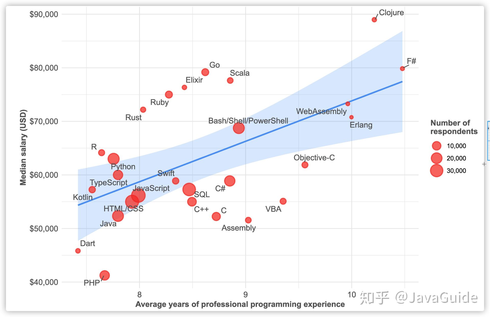
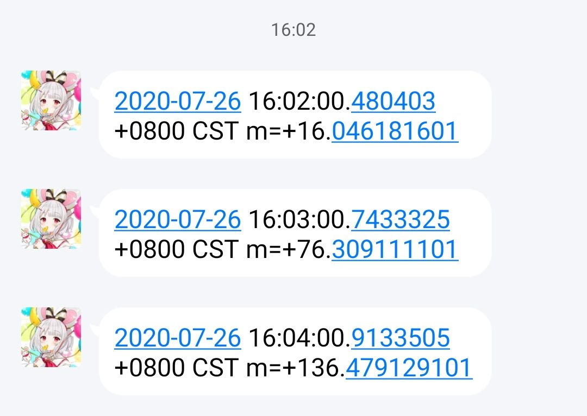

QQ机器人是怎么回事呢？QQ相信大家都很熟悉，但是QQ机器人是怎么回事呢？QQ机器人，其实就是能够接收QQ消息并自动回复的机器人程序，这就是关于QQ机器人的事情了。
好了，今天要介绍的就是一个QQ机器人（bot）框架——mirai。mirai 是一个在全平台下运行，提供 QQ Android 和 TIM PC 协议支持的高效率机器人库。项目地址：https://github.com/mamoe/mirai
目前mirai支持通过大部分主流语言调用，本文将介绍如何使用Golang搭建属于你自己的bot。另外Python也可以写但是我懒得写了（要用到asyncio库，解释起来又要一堆篇幅了），感兴趣可以自行研究。
为什么要做这个
好玩
真的好玩
可以用来实践go语言，毕竟大家小学期不是刚学完吗（什么你没选？现在开始自学还来得及。你问为什么要学？看看下面这张图就懂了）

Get Started
在电脑上下载miraiOK一键启动器（https://github.com/LXY1226/miraiOK），并且装上mirai-api-http插件（https://github.com/project-mirai/mirai-api-http，在右边的releases下载jar文件）
去看README配置好mirai-api-http
运行miraiOK，输入login QQ号 密码进行登录（我这里Windows Defender会报毒，应该是误报，信不过的话就把源码克隆下来自己编译）
执行命令go get github.com/Logiase/gomirai，用来为go下载gomirai库（https://github.com/Logiase/gomirai）
简单的小例子 这是一个最简单的bot模板，适用于一问一答的方式。使用时把const一栏里的东西改成自己的东西，main函数内基本不需要变动，在onReceiveMessage函数里写机器人的应答代码。
这种直接通过看Demo上手的学习方式我愿称之为Demo式学习
1 2 3 4 5 6 7 8 9 10 11 12 13 14 15 16 17 18 19 20 21 22 23 24 25 26 27 28 29 30 31 32 33 34 35 36 37 38 39 40 41 42 43 44 45 46 47 48 49 50 51 52 53 54 55 56 57 58 59 60 61 62 63 64 65 66 67 68 69 70 package mainimport ( "github.com/Logiase/gomirai" "github.com/Logiase/gomirai/message" "io/ioutil" "math/rand" "os" "os/signal" ) const ( qq = 123456 url = "http://127.0.0.1:3399" authKey = "qwerty" ) var client *gomirai.Clientvar bot *gomirai.Botfunc main () interrupt := make (chan os.Signal, 1 ) signal.Notify(interrupt, os.Interrupt) client = gomirai.NewClient("default" , url, authKey) key, err := client.Auth() if err != nil { client.Logger.Fatal(err) } bot, err = client.Verify(qq, key) if err != nil { client.Logger.Fatal(err) } defer func () err := client.Release(qq) if err != nil { client.Logger.Warn(err) } }() go func () err := bot.FetchMessages() if err != nil { client.Logger.Error(err) } }() for true { select { case <-interrupt: return case e := <-bot.Chan: switch e.Type { case message.EventReceiveFriendMessage: go onReceiveMessage("friend" , e) case message.EventReceiveGroupMessage: go onReceiveMessage("group" , e) case message.EventReceiveTempMessage: go onReceiveMessage("temp" , e) } } } } func onReceiveMessage (senderType string , e message.Event) }
当然我们的标题是“手把手教你”，所以肯定不能只扔个Demo就完事了。下面就该手把手教了。
作为例子，让我们现在实现一个色图（误）bot。
首先看到onReceiveMessage里的两个参数：senderType是一个string类型，表示发送者是好友、群组还是临时会话；e是一个message.Event，包含了这条消息的信息。
让我们去看看message.Event的定义：
1 2 3 4 5 6 7 8 type Event struct { Type string `json:"type"` MessageChain []Message `json:"messageChain"` Sender Sender `json:"sender"` EventId uint `json:"eventId"` FromId uint `json:"fromId"` GroupId uint `json:"groupId"` }
这里有一个“消息链”的概念。我们看到一条QQ消息，可能是由不同的各个组件构成的，比如纯文本、图片、QQ表情、At、……这些不同的组件串在一起形成一条消息，在mirai中就叫做“消息链”。在gomirai里的实现就是一个Message类型的切片。
有一点需要注意的是，MessageChain[0]永远都是Source类型的。Source并不是一个真实的消息组件，它只是提供了一个序号用于定位这条消息。我们能看到的其他消息组件其实是从MessageChain[1]开始的。
而Sender表示这条消息的具体的发送者，定义如下：
1 2 3 4 5 6 7 8 9 10 11 12 13 14 type Sender struct { Id uint `json:"id,omitempty"` NickName string `json:"memberName,omitempty"` Remark string `json:"remark,omitempty"` MemberName string `json:"memberName,omitempty"` Permission string `json:"permission,omitempty"` Group Group `json:"group,omitempty"` } type Group struct { Id uint `json:"id,omitempty"` Name string `json:"name,omitempty"` Permisson string `json:"permisson,omitempty"` }
回到我们的bot来。首先我们准备一些图片，保存在img目录里。（别问，问就是蓝色p站）
我们希望收到特定的消息才应答，其他消息直接忽视。所以：
1 2 3 4 if e.MessageChain[1 ].Text != "来张色图" { return }
然后再从img目录随机抽选一张图片：
1 2 3 4 5 6 7 8 9 10 11 12 13 14 15 dir, err := ioutil.ReadDir("img" ) if err != nil { client.Logger.Error(err) } var name string var filepath string if l := len (dir); l != 0 { ran := rand.Intn(l) name = dir[ran].Name() filepath = "img/" + name } else { return }
之后就是上传图片然后发送消息：
1 2 3 4 5 6 7 8 9 10 11 12 13 14 15 16 switch senderType {case "friend" : _, err = bot.SendFriendMessage(e.Sender.Id, 0 , message.ImageMessage("id" , imgId), message.PlainMessage(name)) case "group" : _, err = bot.SendGroupMessage(e.Sender.Group.Id, 0 , message.ImageMessage("id" , imgId), message.PlainMessage(name)) case "temp" : _, err = bot.SendTempMessage(e.Sender.Group.Id, e.Sender.Id, message.ImageMessage("id" , imgId), message.PlainMessage(name)) } if err != nil { client.Logger.Error(err) }
整个程序是这样的：
1 2 3 4 5 6 7 8 9 10 11 12 13 14 15 16 17 18 19 20 21 22 23 24 25 26 27 28 29 30 31 32 33 34 35 36 37 38 39 40 41 42 43 44 45 46 47 48 49 50 51 52 53 54 55 56 57 58 59 60 61 62 63 64 65 66 67 68 69 70 71 72 73 74 75 76 77 78 79 80 81 82 83 84 85 86 87 88 89 90 91 92 93 94 95 96 97 98 99 100 101 102 103 104 105 106 107 108 109 110 111 112 113 package mainimport ( "github.com/Logiase/gomirai" "github.com/Logiase/gomirai/message" "io/ioutil" "math/rand" "os" "os/signal" ) const ( qq = 123456 url = "http://127.0.0.1:3399" authKey = "qwerty" ) var client *gomirai.Clientvar bot *gomirai.Botfunc main () interrupt := make (chan os.Signal, 1 ) signal.Notify(interrupt, os.Interrupt) client = gomirai.NewClient("default" , url, authKey) key, err := client.Auth() if err != nil { client.Logger.Fatal(err) } bot, err = client.Verify(qq, key) if err != nil { client.Logger.Fatal(err) } defer func () err := client.Release(qq) if err != nil { client.Logger.Warn(err) } }() go func () err := bot.FetchMessages() if err != nil { client.Logger.Error(err) } }() for true { select { case <-interrupt: return case e := <-bot.Chan: switch e.Type { case message.EventReceiveFriendMessage: go onReceiveMessage("friend" , e) case message.EventReceiveGroupMessage: go onReceiveMessage("group" , e) case message.EventReceiveTempMessage: go onReceiveMessage("temp" , e) } } } } func onReceiveMessage (senderType string , e message.Event) if e.MessageChain[1 ].Text != "来张色图" { return } dir, err := ioutil.ReadDir("img" ) if err != nil { client.Logger.Error(err) } var name string var filepath string if l := len (dir); l != 0 { ran := rand.Intn(l) name = dir[ran].Name() filepath = "img/" + name } else { return } imgId, err := bot.UploadImage(senderType, filepath) if err != nil { client.Logger.Error(err) } switch senderType { case "friend" : _, err = bot.SendFriendMessage(e.Sender.Id, 0 , message.ImageMessage("id" , imgId), message.PlainMessage(name)) case "group" : _, err = bot.SendGroupMessage(e.Sender.Group.Id, 0 , message.ImageMessage("id" , imgId), message.PlainMessage(name)) case "temp" : _, err = bot.SendTempMessage(e.Sender.Group.Id, e.Sender.Id, message.ImageMessage("id" , imgId), message.PlainMessage(name)) } if err != nil { client.Logger.Error(err) } }
一个色图bot就写好了！编译运行测试一下（确保已经运行mirai-console并且已经登录了）：
进阶——怎么让bot主动发送消息？ 首先介绍守护协程的概念，我们定义一个无限循环的函数daemon()：
1 2 3 4 5 func daemon () for true { } }
然后在main函数里作为goroutine启动：go daemon()
这个goroutine永远不会结束，因此叫做守护协程。（在别的语言里如果是线程的话就叫守护线程）当然我们不希望里面的语句执行得太频繁，所以通常会用到time.Sleep(Duration)函数让协程休眠一会儿再继续。
介绍这个有什么用呢？思考一下，我想让bot在某一时刻主动发送消息，那么就让这个守护协程睡到那个时候不就行了。举个例子，假如我要实现一个整分钟报时bot，那就可以这么写：
1 2 3 4 5 6 7 8 9 10 11 12 13 14 15 16 func daemon () for true { now := time.Now() nextMinute := time.Date(now.Year(), now.Month(), now.Day(), now.Hour(), now.Minute(), 0 , 0 , now.Location()).Add(time.Minute) delta := nextMinute.Unix() - now.Unix() time.Sleep(time.Duration(delta) * time.Second) _, err := bot.SendFriendMessage(targetQQ, 0 , message.PlainMessage(time.Now().String())) if err != nil { client.Logger.Error(err) } } }()
整个程序代码如下（因为这个bot只发不收，所以忽略了接收消息部分的代码）：
1 2 3 4 5 6 7 8 9 10 11 12 13 14 15 16 17 18 19 20 21 22 23 24 25 26 27 28 29 30 31 32 33 34 35 36 37 38 39 40 41 42 43 44 45 46 47 48 49 50 51 52 53 54 55 56 57 58 59 60 61 62 63 64 65 66 67 package mainimport ( "github.com/Logiase/gomirai" "github.com/Logiase/gomirai/message" "github.com/sirupsen/logrus" "os" "os/signal" "time" ) const ( qq = 123456 targetQQ = 987654 url = "http://127.0.0.1:3399" authKey = "qwerty" ) var client *gomirai.Clientvar bot *gomirai.Botfunc main () interrupt := make (chan os.Signal, 1 ) signal.Notify(interrupt, os.Interrupt) client = gomirai.NewClient("default" , url, authKey) client.Logger.Level = logrus.TraceLevel key, err := client.Auth() if err != nil { client.Logger.Fatal(err) } bot, err = client.Verify(qq, key) if err != nil { client.Logger.Fatal(err) } defer func () err := client.Release(qq) if err != nil { client.Logger.Warn(err) } }() go daemon() <-interrupt } func daemon () for true { now := time.Now() nextMinute := time.Date(now.Year(), now.Month(), now.Day(), now.Hour(), now.Minute(), 0 , 0 , now.Location()).Add(time.Minute) delta := nextMinute.Unix() - now.Unix() time.Sleep(time.Duration(delta) * time.Second) _, err := bot.SendFriendMessage(targetQQ, 0 , message.PlainMessage(time.Now().String())) if err != nil { client.Logger.Error(err) } } }
效果如下：

虽然这个例子很简单而且没什么用，但是基于这个原理，结合你自己的想法，就可以做出各种功能的bot了。
进一步的挑战 写完自己的bot以后，尝试思考一下这些问题：
你的bot能够长时间运行吗？能够运行多久？
你的bot能够同时处理多少消息？1个？10个？100个？
你的bot有多少代码？当随着功能增多、代码越来越多的时候应该怎么组织项目？
不要小看toy project，哪怕是toy project也是有很多值得挑战的方面的。